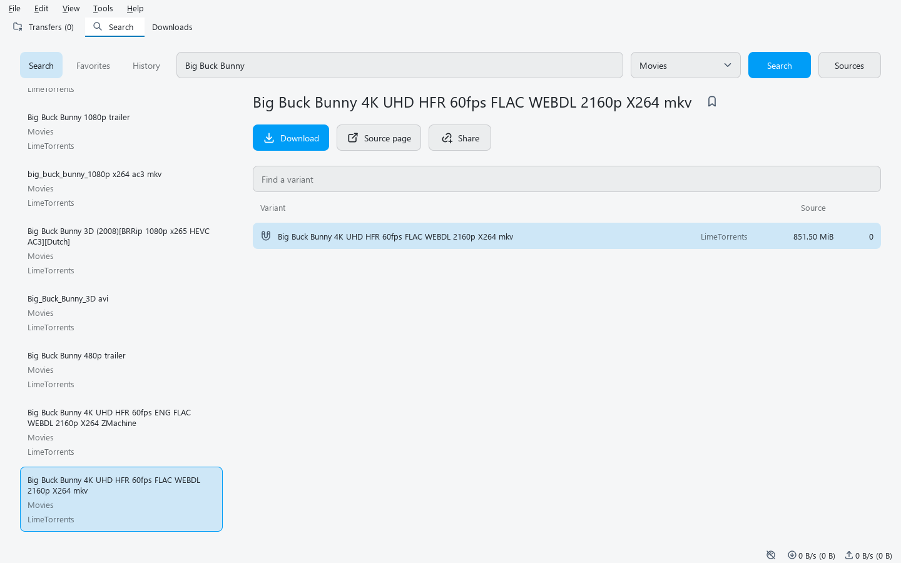

Compare the available releases
Choose a language, quality and edition, and compare file sizes and seed counts. History remembers the release you selected.
Compare results from different sources and download the release you choose. Videos open in qplay; books and manga open in the built-in reader.
Linux x64 / WSL (Ubuntu 24.04+, glibc 2.39+)
curl -fsSL https://qbutt-org.github.io/qbutt/install.sh | sh
Could not copy. Copy the selected command manually.

Choose a language, quality and edition, and compare file sizes and seed counts. History remembers the release you selected.
Send videos to qplay, including torrent files that are still downloading. The built-in reader supports chapters and saved reading positions.